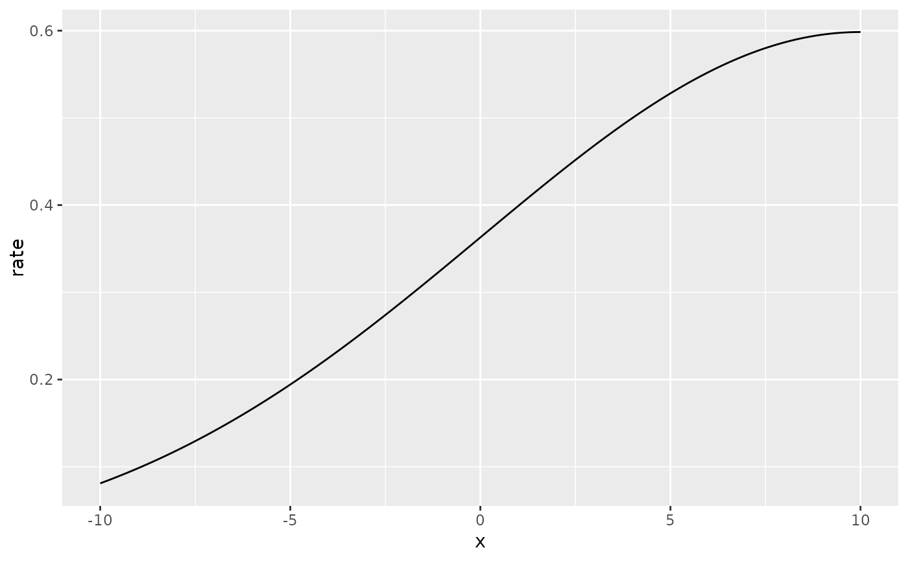

This data set serves to teach the concept of modelling species that gather in groups and where the grouping behaviour depends on space.
Usage
data(toygroups)Format
The data are a list that contains these elements:
groups:A
data.frameof group locationsxand sizesizedf.size:IGNORE THIS
df.intensity:A
data.framewith Poisson process intensityd.lambdaat locationsxdf.rate:A
data.framethe locationsxand associatedratewhich parameterized the exponential distribution from which the group sizes were drawn.
Examples
# \donttest{
if (require(ggplot2, quietly = TRUE)) {
# Load the data
data("toygroups", package = "inlabru")
# The data set is a simulation of animal groups residing in a 1D space. Their
# locations in x-space are sampled from a Cox process with intensity
ggplot(toygroups$df.intensity) +
geom_line(aes(x = x, y = g.lambda))
# Adding the simulated group locations to this plot we obtain
ggplot(toygroups$df.intensity) +
geom_line(aes(x = x, y = g.lambda)) +
geom_point(data = toygroups$groups, aes(x, y = 0), pch = "|")
# Each group has a size mark attached to it.
# These group sizes are sampled from an exponential distribution
# for which the rate parameter depends on the x-coordinate
ggplot(toygroups$groups) +
geom_point(aes(x = x, y = size))
ggplot(toygroups$df.rate) +
geom_line(aes(x, rate))
}

# }